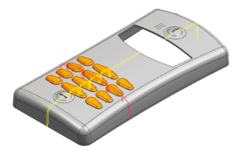
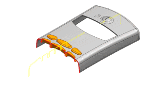

Replace the view and activate the two sections
-
Choose View→Layout→Replace View.
From the Replace View with... list select Isometric and click OK.
-
In the Assembly Navigator, select the check boxes for both sections.

-
In the Assembly Navigator, right-click Section 2 and choose Make Work Section.

-
In the Assembly Navigator, clear the check boxes for both sections.
-
On the View toolbar, click Clip Work Section
 to turn it off.
to turn it off.
-
Close the part without saving.